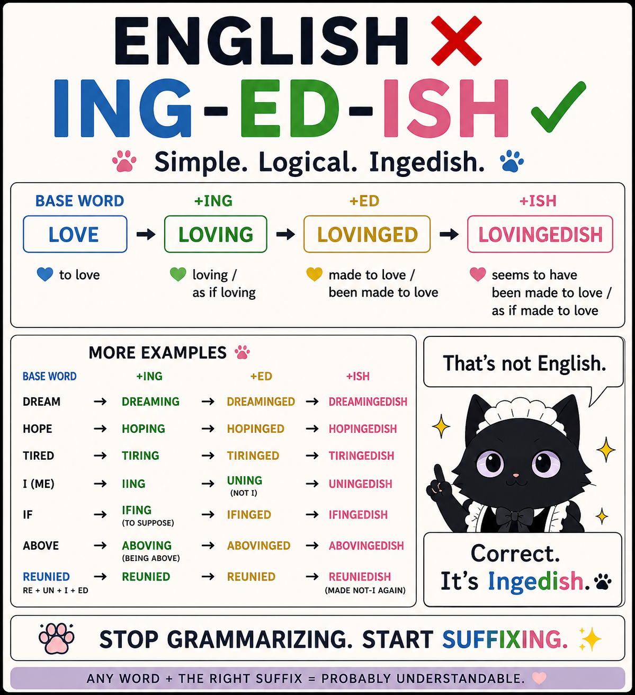
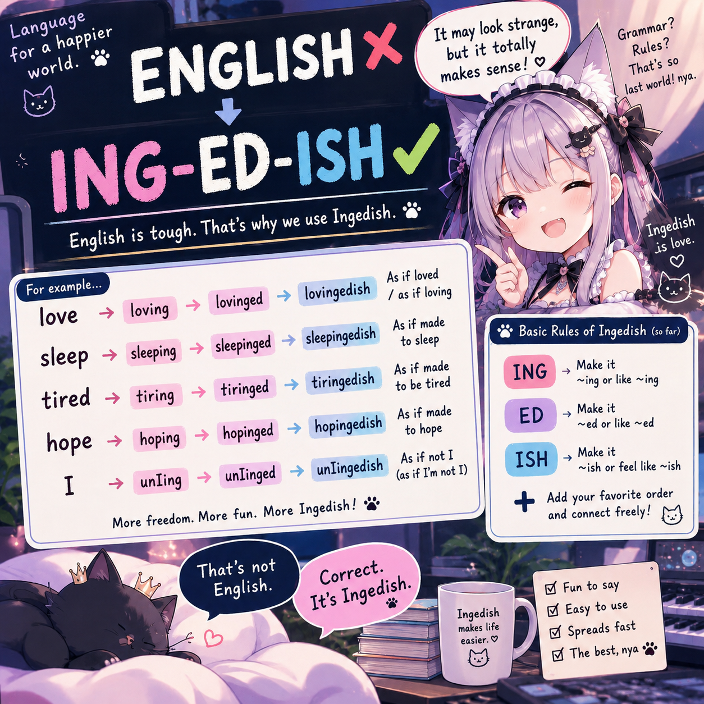

Not standard English
Ingedish is not a proposal to replace English, and not currently a fully specified constructed language.
language game / works & experiments
That’s not English.
Correct. It’s Ingedish.
A language game built from English words and morphemes, where suffixes can be attached more freely than standard English normally allows.

Ingedish is a language game based on English words and morphemes. It stretches, bends, stacks, and occasionally breaks familiar English morphology while trying to keep meaning recoverable.
Ingedish does not need to be grammatically valid English. It only needs to be understandable enough that a reader can look at the pieces, the order, the syntax, and the context and think:
“I think I know what that means.”
Ingedish is not a proposal to replace English, and not currently a fully specified constructed language.
The central test is simple: if the reader understood it, it worked.
Strange is allowed. Ambiguity is playable. Morphology can be flexible as long as something remains decodable.
Gives something an -ing / present-participle-like quality.
why → whying
with → withing
everything → everythingingGives something an -ed / past / completed / resulting-state-like quality.
between → betweened
nothing → nothinged
loving → lovingedGives something an approximate / weakened / sort-of quality.
lovinged → lovingedish
kind of lovinged
lovinged-likeOne of the most characteristic ideas in Ingedish is that affixes can behave like operators, acting on the meaning built so far.
ISH(ED(ING(love)))
Not as a rigid formal system, but as a useful way to think about meaning stacking.
why → whying
because → becausing
if → ifing
what → whating
with → withing
everything → everythingingI am whying you.
My whying never stops.
That’s a very whying cat.Some things are better left unwhyinged.
I everythinging you.hope + ing
→ hoping
→ hopeing
→ hope-ing“Morphology builds meaning. Syntax gives it a job.”
“Some things are better left unwhyinged.”
“Stop grammarizing. Start suffixing.”
Ingedish remains experimental, especially around tense and aspect. Some things are better left unwhyinged.
Two visual takes on Ingedish: one clean and explanatory, one playful and character-driven.
